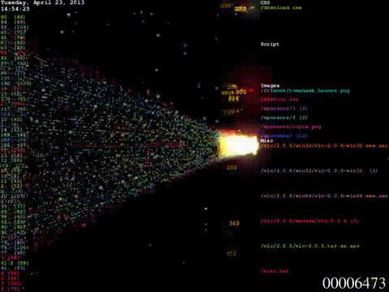

Disturbing Algorithms
The first example I looked at this week was SLOW.LLM, a browser extension that throttles fetch functionality when a browser or server is interacting with an AI agent. I enjoyed this project for two reasons. The first being that they extended this project from a browser extension to something that can be run network-wide, enabling AI dead zones in schools, cafes, and work locations. This feels like a tangible action a community leader can take against AI use if they feel inclined. I also like its reliance on slowing down instead of blocking to dissuade use. So much of the draw towards AI is the fact that it promises passable results in a fraction of the time it takes to make them yourself. By removing its ability to be near instantaneous, working with AI becomes a much more frustrating experience.
I think Neta Alexander's article Rage Against the Machine has some great points regarding the power of lag and buffering.

This project gave me some inspiration for my own final project. Tega Brain has employed a network of bots to artificially inflate the AdSense earnings of articles covering climate change, with the goal of boosting their SEO rating and making the articles appear more in searches. I think the directed use of automated engagement is a promising framework for curating a personal algorithm as well. Instead of attempts to understand or hinder the algorithm that controls what ads I see, I could instead hyper-charge it. If I’m looking for a new backpack, I could deploy a script to click on thousands of ads of backpacks and curate my own feed towards it, while also drowning out my personal data with tons of automated noise.
Nightshade and ShieldFont
I’ve written about these two projects before, but I’m glad to see them officially make an appearance in the syllabus. I feel like we all just want to be one step ahead of the algorithms shaping our lives, feel like we can take back some control. These projects provide a protective layer of obfuscation that is powerful when it relates to others stealing your data, but has to be tweaked if it will be applied to one’s own curatorial algorithms. I don’t want to be seeing completely uncurated content everywhere after I poison my own dataset. It’s often nice to have topics I am interested in shown to me. I’m curious about a more deliberate application of data obfuscation, to curate, guide, or cleanse instead of poison.
The Algorithmic Imaginary
To explore my interest in creating my final project around curatorial algorithms, I read a few papers that helped orient my research questions going forward. The first was The algorithmic imaginary: exploring the ordinary affects of Facebook algorithms by Taina Bucher. Before this reading, I saw myself focusing on the inner workings of these algorithms, trying to shine a light on the large data and profiling that occurs. This reading makes a point to highlight that instead of having to break into the black box for insight on the algorithm, the feelings it causes in users are just as real and insightful as the algorithm itself, stating “The algorithmic imaginary is not to be understood as a false belief or fetish of sorts but, rather, as the way in which people imagine, perceive and experience algorithms and what these imaginations make possible.”
Bucher discusses how moments of heightened awareness towards an algorithm usually occur when it either feels inaccurate or a bit too accurate. Some of these she refers to as “woah” moments, like when you sit down in the morning with a coffee and see an ad for Starbucks on your phone. “...algorithms define ‘what “finds us”, and so have a powerful place in the circulation of data and how these are filtered and directed’ (p. 82). Whoa moments arise when people become aware of being found.” She highlights an opposite tension that occurs when an algorithm seems to be stuck on an old version of yourself. An interviewee in the paper discusses the experience of having their ex-boyfriend's account recommended to them on Facebook repeatedly even after they had broken up. Due to the archival nature of a database, Bucher asks to what extent an algorithm like this keeps us tied to past versions of ourselves.
She also outlines how the awareness of an algorithm shapes users' experience and actions on a platform in hopes of guiding the algorithm’s outcome. Content creators will format posts in certain ways and upload at certain times, users will interact with content they hope to see more of, and friends will leave comments and likes on a user’s post in the hopes of boosting its reach. “ When Rachel finds herself ‘clicking consciously everyday’ to influence what will subsequently
show up in her news feed, the algorithm is not merely an abstract ‘unreal’ thing that she thinks about, but something that influences the ways in which she uses Facebook.”
Engagement farming techniques that have been discovered through algorithmic gossip and imagination.
For Next Week
After reading about how attempting to peek in the black box might be a red herring, I am interested in gathering personal anecdotes from my community about moments of algorithmic awareness, pain points, and desires for control or transparency regarding it. I plan on conducting 3 informational interviews with friends about these topics. I will first need to research these topics more in depth and create a script for these interviews. I plan on referencing the articles mentioned above and their bibliographies to form these interviews. From these interviews, I hope to glean what kind of automated tool/data visualization/resource/etc. might be most effective in disturbing the dynamics of user and curatorial algorithm.